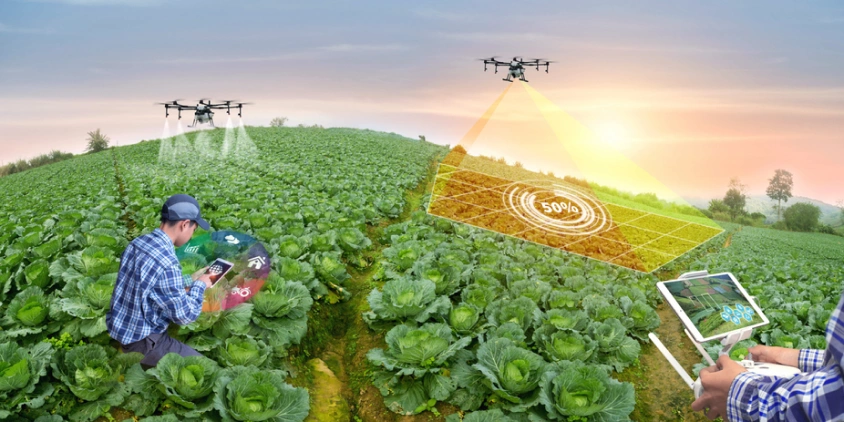
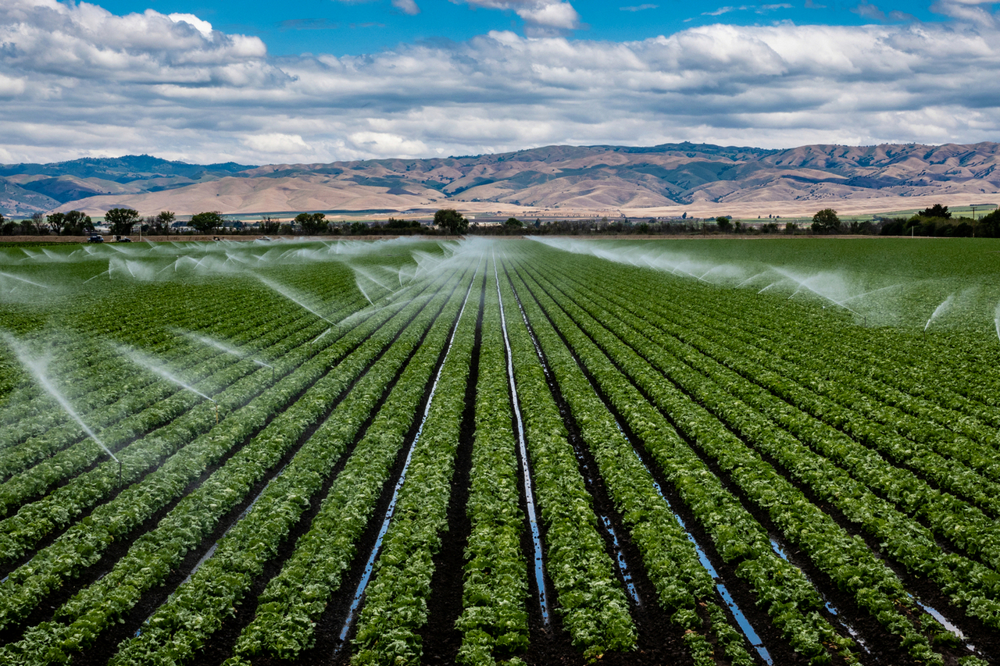
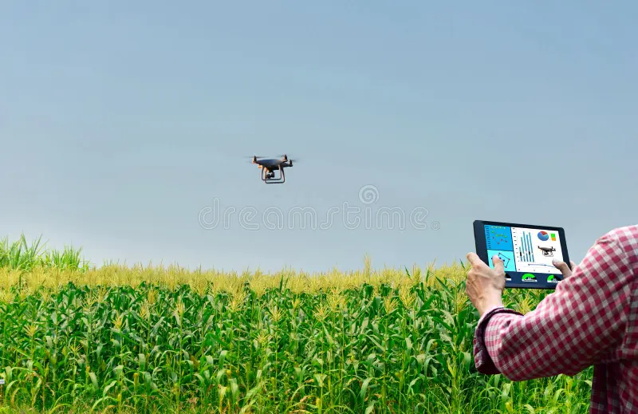
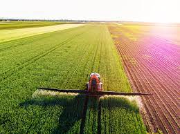

Nos Services Agricoles
Découvrez nos solutions modernes et innovantes pour optimiser l'agriculture et garantir un développement durable.

Agriculture de précision
Utilisez des technologies avancées pour maximiser vos rendements agricoles.

Irrigation intelligente
Des systèmes d'irrigation modernes pour économiser l'eau et augmenter votre productivité.
Engrais écologiques
Améliorez vos sols grâce à des fertilisants respectueux de l'environnement.

Surveillance par drones
Surveillez vos cultures efficacement grâce à des drones équipés de caméras modernes.

Analyse des cultures
Des outils avancés pour détecter les maladies et optimiser vos rendements.